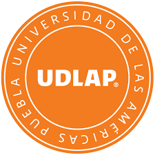

La Universidad de las Américas Puebla (UDLAP) es una universidad privada ubicada en la ex Hacienda Santa Catarina Mártir, en San Andrés Cholula, Puebla, México. Se encuentra clasificada como Institución de Nivel VI, en la Southern Association of Colleges and Schools - Commission on Colleges (SACSCOC).[1] Fue fundada en 1940 bajo el nombre de Mexico City College. En 1966 la Fundación Mary Street Jenkins asignó los fondos necesarios para que se estableciera en Cholula, mudándose en 1970 a su sede actual. En 1985 se separó de la Universidad de las Américas A.C, manteniéndose como instituciones independientes hasta la fecha. La UDLAP es reconocida como una de las principales instituciones de educación superior en México y goza de reconocimiento internacional.[2][3][4][5] Su rector es el Dr. Luis Ernesto Derbez Bautista, exsecretario de Relaciones Exteriores y Economía de México.
